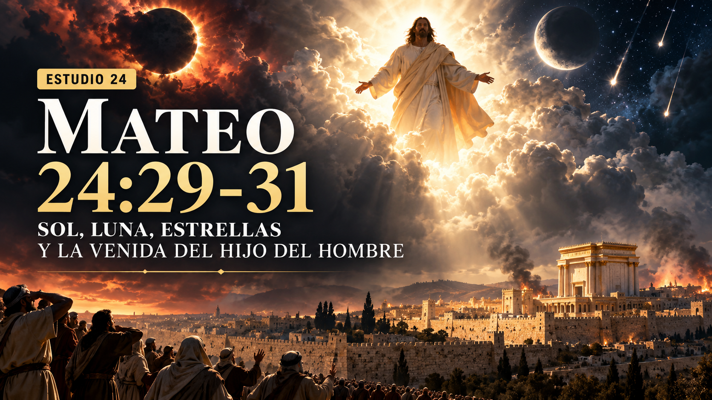
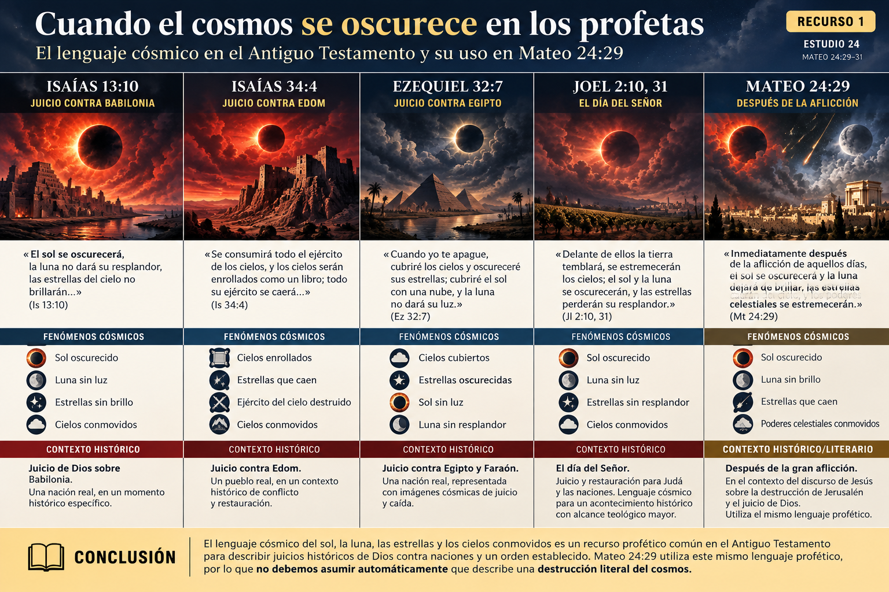
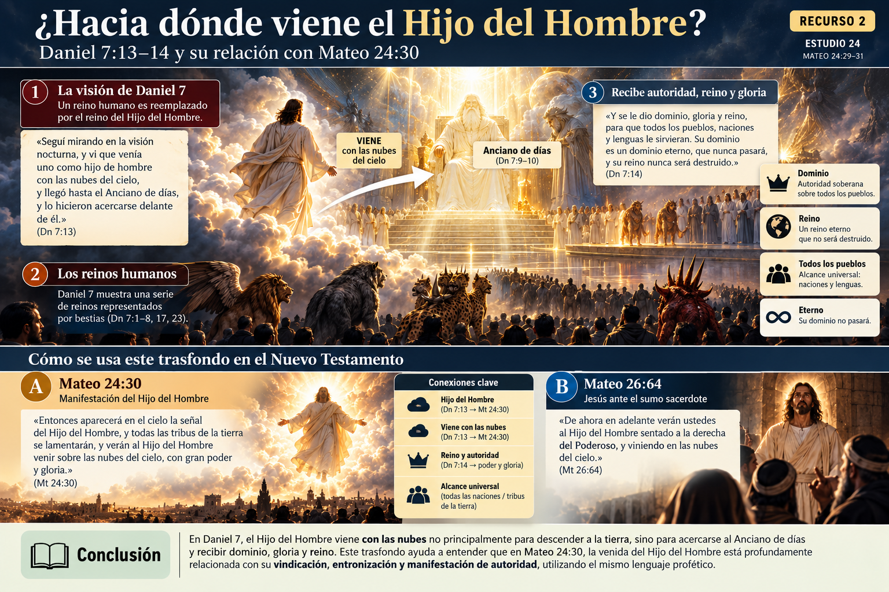
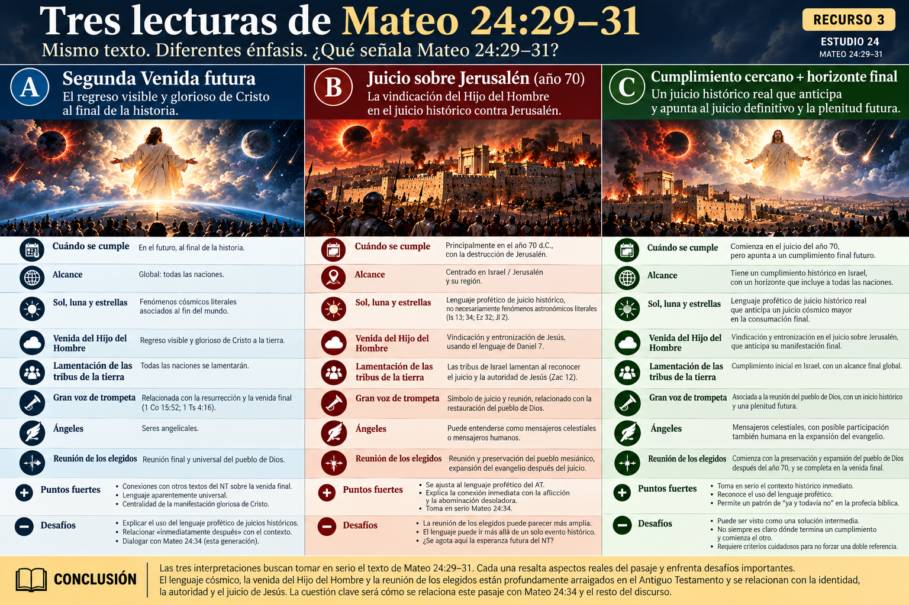
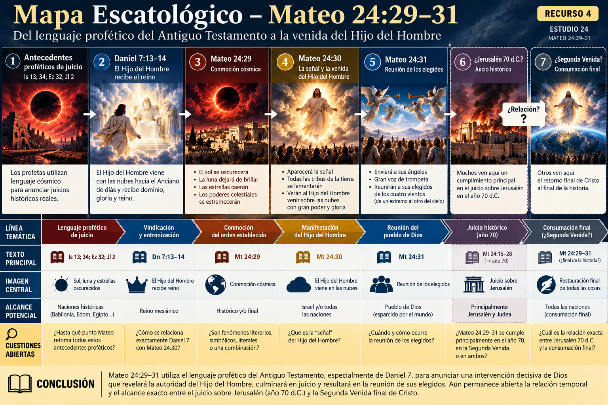

📜 Isaías 13
Juicio contra Babilonia. Sol, luna y estrellas participan del lenguaje de juicio.

¿Segunda Venida, juicio sobre Jerusalén, lenguaje profético… o una combinación de horizontes?
Cuando Jesús anuncia que el sol se oscurecerá, la luna dejará de brillar, las estrellas caerán y el Hijo del Hombre vendrá sobre las nubes, ¿está describiendo literalmente el fin del cosmos y su Segunda Venida?
¿Está utilizando el lenguaje profético del Antiguo Testamento para anunciar el juicio sobre Jerusalén?
¿O el pasaje reúne elementos de ambos horizontes?
No comenzaremos eligiendo una respuesta. Primero debemos escuchar cómo hablaba la Biblia antes de Mateo 24.
Inmediatamente después de la aflicción de aquellos días, el sol se oscurecerá y la luna dejará de brillar, las estrellas caerán del cielo, y los poderes celestiales se estremecerán.
Entonces aparecerá en el cielo la señal del Hijo del Hombre, y todas las tribus de la tierra se lamentarán, y verán al Hijo del Hombre venir sobre las nubes del cielo, con gran poder y gloria.
Y enviará a sus ángeles con gran voz de trompeta, y de los cuatro vientos, desde un extremo al otro del cielo, ellos juntarán a sus elegidos.
Mateo 24:29–31 (RVC)
El movimiento del pasaje puede resumirse así:
Jesús comienza conectando el v.29 directamente con la aflicción descrita anteriormente.
No debemos estudiar Mateo 24:29–31 como si fuera una profecía aislada. En los estudios anteriores vimos la secuencia:
Nuestra primera reacción moderna puede ser imaginar un fenómeno astronómico literal. Pero Jesús está hablando como un profeta bíblico, y las imágenes que utiliza ya existían.
Isaías anuncia juicio contra Babilonia. En ese contexto aparecen estrellas oscurecidas, sol sin luz, luna sin resplandor y cielos estremecidos.

Juicio contra Babilonia. Sol, luna y estrellas participan del lenguaje de juicio.
Juicio contra Edom. Los cielos son enrollados y su ejército cae.
Juicio contra Egipto y Faraón. Dios cubre los cielos y oscurece sus lumbreras.
Día del Señor. Sol y luna oscurecidos y conmoción celestial.
Tampoco debemos ir al extremo contrario. Que una imagen tenga antecedentes simbólicos no demuestra automáticamente que todo el acontecimiento sea simbólico.
La literatura profética puede describir acontecimientos reales mediante imágenes cósmicas. El sol que se oscurece puede comunicar un juicio divino que trastorna radicalmente el orden establecido.
Entonces aparecerá en el cielo la señal del Hijo del Hombre…
Mateo 24:30
¿Qué es exactamente esa señal? El texto no la identifica explícitamente.
A lo largo de la historia se han propuesto una cruz visible, una manifestación luminosa, alguna señal celestial, la propia aparición de Cristo o una señal que demuestra que el Hijo del Hombre ha sido entronizado.
Aquí encontramos probablemente la clave más importante del pasaje. La expresión nos lleva directamente a Daniel 7:13–14.
En la visión de Daniel, uno como hijo de hombre viene con las nubes del cielo, se acerca al Anciano de días y recibe dominio, gloria y reino.
Síntesis de Daniel 7:13–14
El detalle es crucial: en la visión de Daniel, el Hijo del Hombre no es presentado simplemente descendiendo del cielo hacia la Tierra. Se acerca al Anciano de días y recibe autoridad real.

Durante su juicio, Jesús vuelve a utilizar el mismo lenguaje:
De ahora en adelante verán ustedes al Hijo del Hombre sentado a la derecha del Poderoso, y viniendo en las nubes del cielo.
Mateo 26:64
Jesús combina aquí imágenes del Salmo 110 y Daniel 7. El lenguaje de las nubes está profundamente relacionado con la exaltación y autoridad mesiánica de Jesús.
En el Antiguo Testamento, venir sobre las nubes no es una imagen cualquiera. Dios aparece repetidamente asociado con ellas. Isaías 19, por ejemplo, describe al Señor viniendo sobre una nube para juzgar a Egipto.
La frase también recuerda a Zacarías 12, donde las familias de Israel hacen lamentación.
Todas las naciones del mundo lamentan ante la manifestación gloriosa de Cristo.
Las tribus de la tierra —particularmente Israel/Judea— lamentan cuando el juicio manifiesta la autoridad de Jesús.
Las trompetas acompañan acontecimientos decisivos relacionados con Dios: aparición divina, reunión del pueblo, guerra, proclamación, juicio y restauración.
Aquí la trompeta está directamente relacionada con la reunión de los elegidos. Esto recuerda especialmente a Isaías 27:13. El Nuevo Testamento también relacionará trompeta, resurrección y venida de Cristo en 1 Corintios 15:52 y 1 Tesalonicenses 4:16.
«Los cuatro vientos» expresa todas las direcciones del mundo. El énfasis está en la extensión de la reunión: los elegidos de Dios serán reunidos sin importar dónde estén dispersos.
Algunos intérpretes han sugerido que Mateo 24:31 podría referirse a mensajeros humanos llevando el evangelio. Sin embargo, el contexto de Hijo del Hombre, cielo, gloria, trompeta y reunión escatológica hace muy natural la lectura tradicional.
Entiende Mateo 24:29–31 como descripción directa del regreso visible y glorioso de Cristo al final de la historia.
Argumentos: aparición gloriosa, alcance universal, ángeles, trompeta, reunión de los elegidos y paralelos con otros textos escatológicos del NT.
Entiende el pasaje principalmente en relación con la destrucción de Jerusalén en el año 70 d.C.
Propone que la caída de Jerusalén sea un juicio histórico real que, a la vez, anticipe el juicio definitivo y la manifestación final de Cristo.

Es fácil convertir Mateo 24:29–31 exclusivamente en una discusión sobre preterismo vs. futurismo. Pero Mateo quiere que veamos algo mayor.
Las potencias tiemblan. Los reinos humanos caen. El cielo mismo parece estremecerse. Y en medio de todo aparece el Hijo del Hombre.
Los imperios pueden parecer poderosos. Jerusalén puede parecer inconmovible. El templo puede parecer eterno. Pero el reino definitivo pertenece al Hijo del Hombre.

Mateo 24:29–31 no debería comenzar interpretándose mediante imágenes modernas de catástrofes astronómicas. Jesús está hablando con el vocabulario de Isaías, Ezequiel, Joel, Zacarías y especialmente Daniel.
El sol que se oscurece, la luna que pierde su luz y las estrellas que caen pertenecen al lenguaje profético de juicio y transformación del orden establecido. Y la figura central procede de Daniel 7: el Hijo del Hombre viniendo con las nubes y recibiendo autoridad.
Y precisamente aquí aparece la siguiente declaración de Jesús:
De cierto les digo, que no pasará esta generación hasta que todo esto acontezca.
Mateo 24:34
Ese será el problema central del Estudio 25.